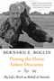

|

|
The Textures of Time
Agency and Temporal Experience
Flaherty, Michael G.
Charles Horton Cooley Award for Best Book from the Society for the Study of Symbolic Interaction, 2012 |
|
Aesthetic
Legacies
Krukowski,
Lucian
Outstanding Academic Title, Choice, 1994 |

|
Transforming
Knowledge
Minnich,
Elizabeth Kamarck
Ninth Annual Frederic W. Ness Book Award, Association of
American Colleges, 1990 |

|
The Ethics of Care
A Feminist Approach to Human Security
Robinson, Fiona
J. Ann Tickner Book Prize from the International Studies Association, 2014 |

|
Putting the Horse before Descartes
My Life's Work on Behalf of Animals
Rollin, Bernard E.
Lifetime Achievement Award for Excellence in Research Ethics from Public Responsibility in Medicine & Research, 2016
|

|
Environmental
Ethics
Duties to and Values in the Natural World
Rolston,
III, Holmes
Holmes Rolston III, has been named the 2003 Templeton Prize
laureate. The prize, valued at more than one million dollars,
is given each year to a living person to encourage and honor
those who advance spiritual matters., 2003 |

|
Echoes
from the Holocaust
Philosophical Reflections on a Dark Time
edited
by Rosenberg, Alan and Gerald E. Myers
A Selection of the Jewish Book Club, 1990 |
|
The
Gold Standard
The Challenge of Evidence-Based Medicine and Standardization in
Health Care
Timmermans,
Stefan and Marc Berg
Winner of the Robert
Merton Professional Book Award from the Science, Knowledge,
and Society section of the American Sociological Association for
the best book published in the past three years in the area of science
studies, 2005 |

|
Sudden
Death and the Myth of CPR
Timmermans,
Stefan, foreword by Bern Shen
Nominated for the C. Wright Mills Book Award, 2000 |
|